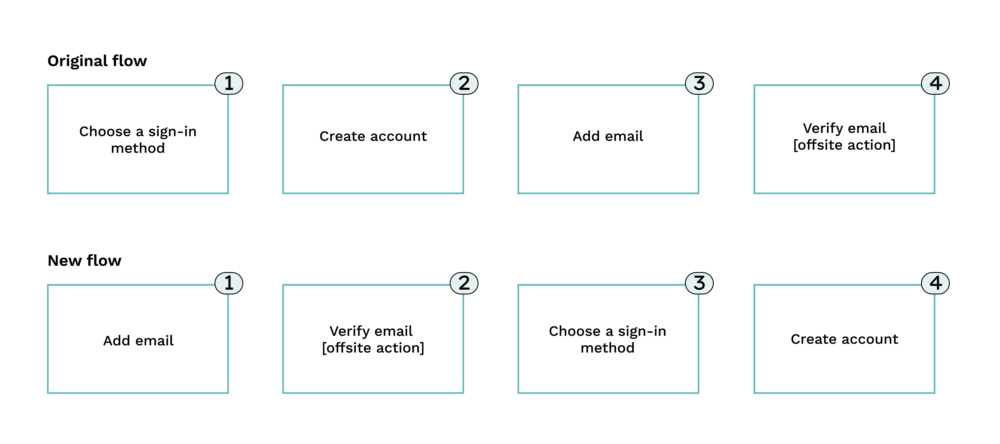
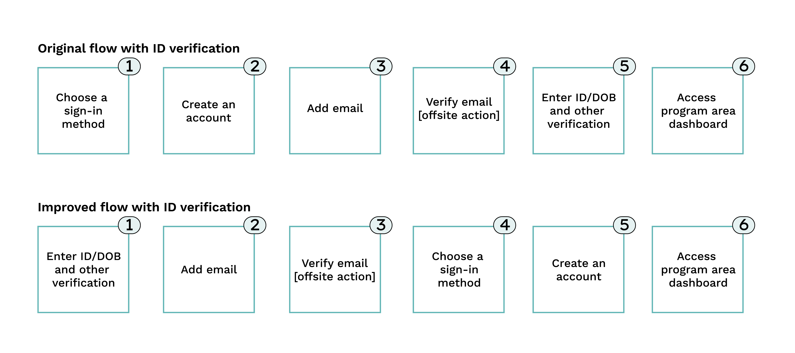

Authentication levels, channels, and required materials visualized – you can see how it gets pretty messy.


Sample high-level onboarding, starting from the user's email
Sample low-level sign-on.
Password reset flow, from the sign-on page.
The user is notified of the need to migrate their account via the sign-on page and does so by creating a new account.
The user signs back into their account and can either view their connected servies (JSO) or manage sign-in options (other features not prototyped/linked).